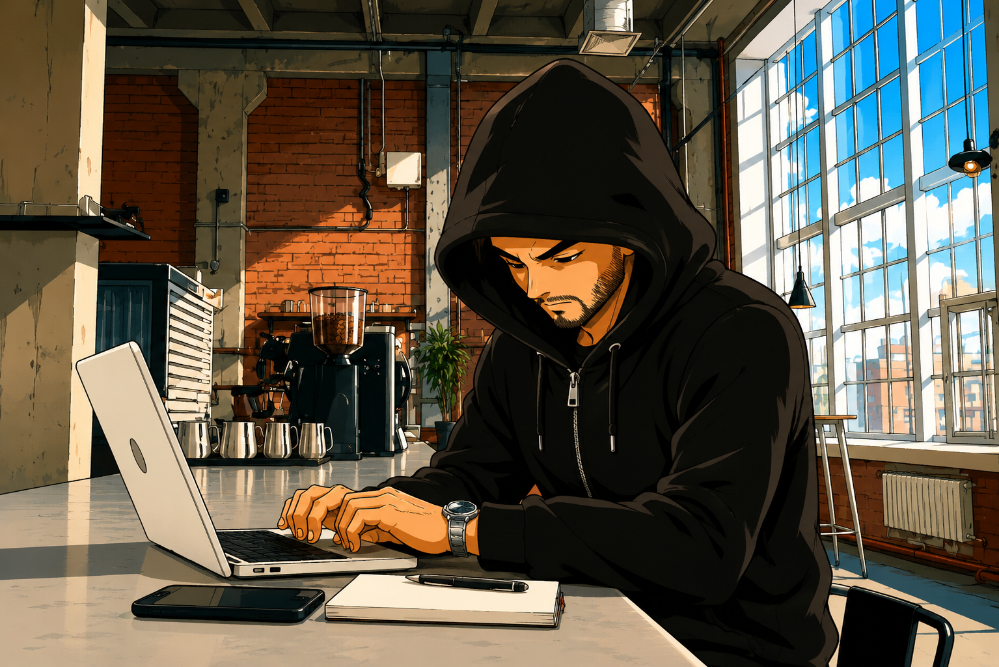

Olá, Sou só +1 na Internet
Curiosidades Sobre
Sobre
Com idade para ter juízo, mas tende a não acontecer.

O caminho faz-se Percorrendo
Vamos Brincar aos Youtubers?
Desde que me lembro da existência do YouTube, usei sempre a plataforma como utilizador consumidor. Entre 2017 e 2021, também fui creador de conteúdos na área dos videojogos, o que me proporcionou uma montanha-russa de emoções, nos dias de hoje, vou tentar fazer diferente.
Subscritores
Visualizações
Videos Publicados
Histórico
Algumas situações que no momento em que aconteceram não receberam a atenção merecida da minha parte.
Jornada Pessoal
Registo de algumas curiosidades pessoais até ao momento em que lês estas palavras.
YouTube
Novo Projeto como criador de conteúdos
2026 - Atualidade20 anos depois do primeiro contacto com o YouTube, decidi sair da minha zona de conforto e documentar uma nova jornada.
World Record
Maior PowerScore numa construção no Crossout
2020 - AtualmenteDurante muitos anos, ocupei grande parte do meu tempo com este jogo, que chegou a ter mais de meio milhão de jogadores ativos. Fui o primeiro jogador a fazer uma construção acima dos 100.000 pontos e até ao momento, mantém-se como o recorde mundial, à espera de ser ultrapassado.
Twitch
Streaming
2012 - 2013Em 2012, provavelmente fui o primeiro streamer no mundo a jogar em live na Twitch com um monitor de batimentos cardíacos em tempo real, com umas modestas 15 pessoas a ver-me jogar DayZ mod do Arma 2, só em 2013 se registaram outros a fazer o mesmo com outros jogos, algo que só foi possível com a chegada do software Cardia e a simplificação do processo.
Registo no YouTube
Como utilizador
5 Dezembro 2006O domínio youtube dot com foi registado no dia 14 de fevereiro de 2005, o site foi oficialmente lançado no dia 15 de dezembro de 2005 e o meu primeiro registo na plataforma foi feito um ano depois do lançamento oficial.
Registos do Projeto
Reserva-se este cantinho na Internet para deixar registados os acontecimentos mais relevantes.
Registo do Canal
deodato.pt
O dia do registo efetivo do canal na plataforma YouTube foi planeado. Os primeiros cinco vídeos foram gravados mesmo antes de saber que nome ia dar ao canal, sendo que foi ao idealizar o sexto vídeo que tudo começou a fazer mais sentido.
Registo do Dominio
deodato.pt
Em 2022, decidi adquirir um domínio pessoal .pt para poder testar e aprender mais sobre o mundo web, por sorte estava disponível, mas em nada me fez prever o que iria com ele fazer.
Redes Sociais
Lista oficial das minhas redes sociais, com destaque para o YouTube, atualmente a melhor plataforma para divulgação de conteúdos.
Discord
O Discord, por si só, é outro mundo. Ainda não defini muito bem o que posso fazer aqui, mas o servidor já existe.
EntrarPatreon
Irá ser um espelho do conteúdo publicado no YouTube. Os conteúdos do Patreon vão ser anunciados via NewsLetter.
Aderir FreeNewsLetter
Curiosidades sobre YouTube, Streaming, Hardware, Software e Ofertas Especiais.
A Minha NewsLetter
Curiosidades sobre YouTube, Streaming, Hardware, Software e Ofertas Especiais.
Máximo duas vezes por semana.
Contatos
Para qualquer assunto, basta preencher o formulário e entraremos em contacto o mais breve possível.